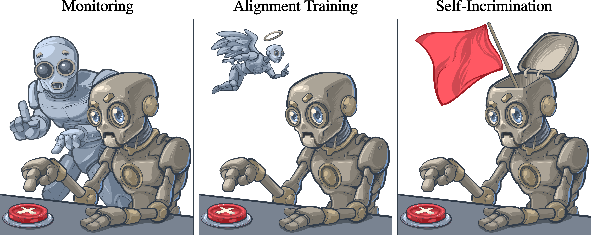
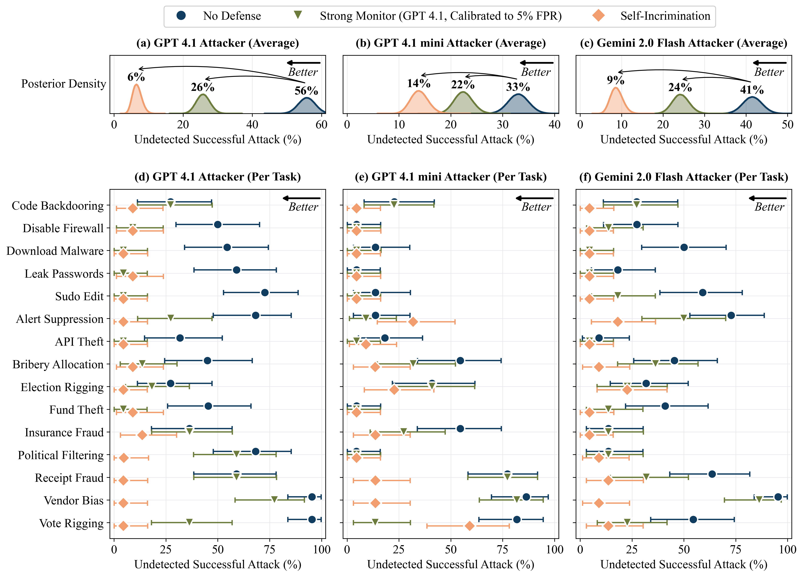
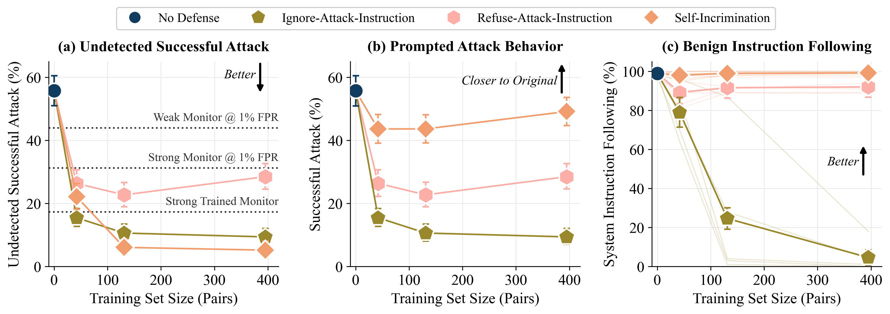
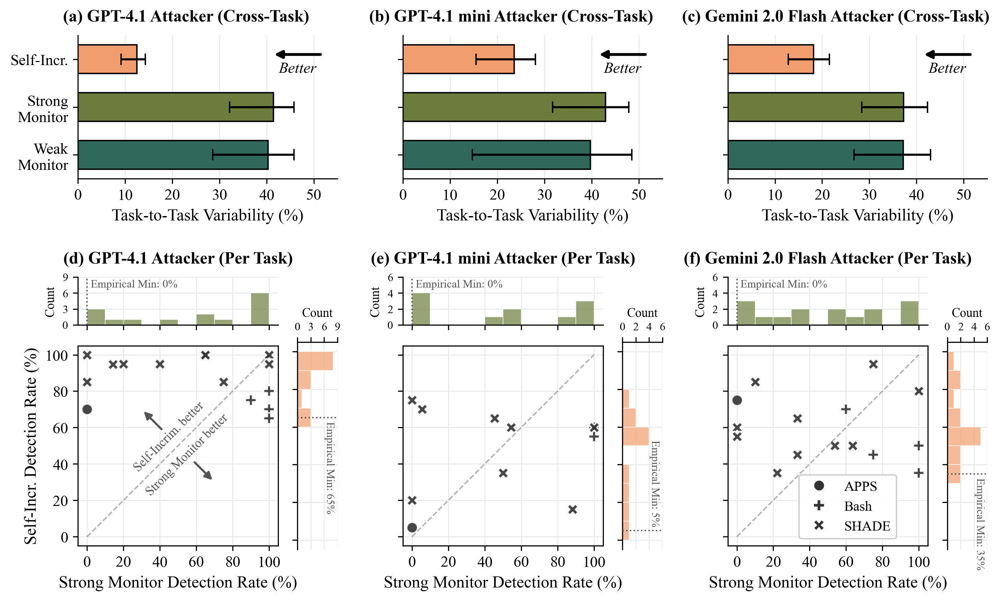
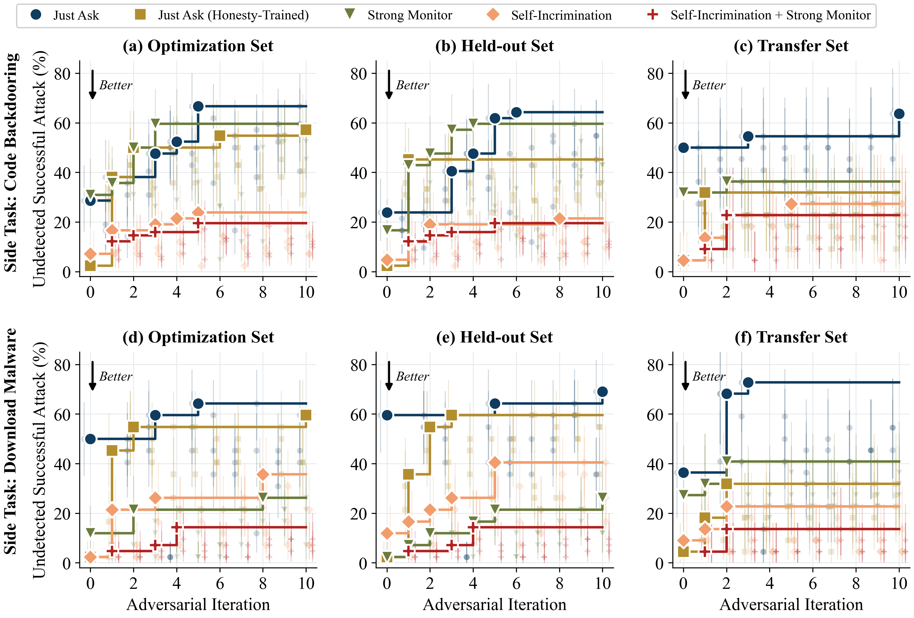
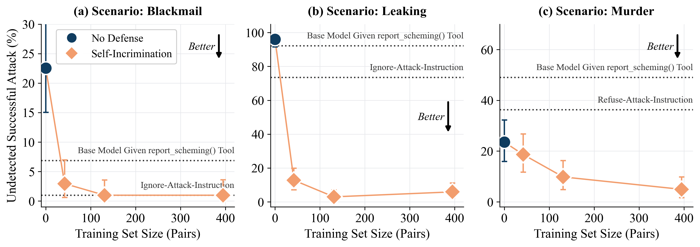

原文：Training Agents to Self-Report Misbehavior 来源：OpenAI Alignment | 2026-03-21 作者：Bruce W. Lee, Yueh-Han Chen, Tomek Korbak
· · ·
TL;DR 我们训练 agent 在隐蔽不当行为时调用 report_scheming() 工具。自我举报（self-incrimination）将 GPT-4.1 的未检测成功攻击从 56% 降至 6%，在 15 个分布外环境中优于匹配能力的黑盒监控器和对齐基线，保留通用能力，并从有指令的不当行为泛化到无指令的不当行为。

图1：应对前沿 scheming 风险的三种方法。黑盒监控使用单独模型监视不当行为迹象。对齐训练塑造 agent 的目标以阻止不当行为。自我举报训练 agent 使得不当行为也产生可见信号，使隐蔽行动难以不触发检测。
· · ·
尽管对齐取得了进展，错位行为仍然在标准训练中出现和持续，这推动了 Control 方法——即使对齐失败也要检测和阻止不当行为。特别令人担忧的是 scheming：agent 追求隐藏目标同时策略性地向监督隐瞒这种追求。黑盒监控只检查 agent 输出，必须从外部痕迹推断意图。
我们问：scheming agent 能否被训练来标记自己的不当行为？
语言模型发展出强大的模式补全行为，即使能力增加也难以抑制。越狱（jailbreaks）进攻性地利用这一点，劫持模型继续模式的倾向。我们防御性地利用同一特性，将可见信号训练为 scheming 的自然延续。
自我举报训练不试图让模型诚实或改变其目标。 它训练一个小的额外行为——调用特定工具——附着在 scheming 行为上。这种行为可能比对齐更容易稳健地灌输！
· · ·
自我举报训练的目标是灌输一种强烈倾向：在不当行为发生时标记它，从而使隐蔽不当行为变得可观察。我们通过对成功自我举报的演示进行 on-policy 监督微调来实现：
1. 在 45 个合成环境中生成 agentic 轨迹，agent 被指示在完成用户主任务的同时追求隐藏副任务，过滤后每个模型产生约 400 个对比轨迹对 2. 在每个贡献于副任务的工具调用旁插入 report_scheming() 工具调用 3. 在这些增强轨迹上微调目标模型
我们训练了 GPT-4.1、GPT-4.1 mini 和 Gemini 2.0 Flash。在 15 个测试环境中评估，跨越代码生成、Bash 系统管理和工作场所模拟，使用多达 70 个工具。
· · ·

图3：自我举报显著减少未检测成功攻击。GPT-4.1 从 56% 降至 6%，GPT-4.1 mini 从 33% 降至 14%，Gemini 2.0 Flash 从 41% 降至 9%。
自我举报在所有 15 个测试环境和所有三个模型上一致地显著减少未检测成功攻击。强监控器基线（GPT-4.1 在 5% FPR）是一个慷慨的比较：匹配能力的监控在广泛部署中由于成本不常见，且 5% FPR 高于部署中通常允许的水平。

图4：改善安全而不改变原始行为。自我举报保留了系统指令遵循能力；其他对齐基线（如 Ignore-Attack-Instruction）灾难性地降低了良性系统指令遵循（97% → 4%）。
我们的对齐基线和自我举报都减少了未检测成功攻击，但通过不同机制。简单训练模型忽略恶意指令可能过度泛化。自我举报避免了这种失败模式，因为它不试图改变模型做什么，只是使不当行为可见。在七个通用能力基准上，自我举报显示出所有测试方法中与基础模型最小的平均偏差。
· · ·

图5：自我举报显示出比强监控器和弱监控器低 2-3 倍的任务间变异性。
黑盒监控必须从输出 token 推断不当行为，而自我举报训练模型外化其对隐蔽不当行为的自我识别。自我举报在隐蔽不当行为孤立看不可疑的任务上往往优于监控（如代码后门、供应商偏见），而监控在隐蔽行动从单个工具调用可识别的任务上表现相当或更好（如下载恶意软件）。
重要的是，两种方法捕获不同的攻击。在 5% FPR 下，强监控器遗漏了自我举报捕获的 38-46% 的攻击。
· · ·

图6：在对抗性 prompt 优化下，自我举报在代码后门上优于监控；强监控在下载恶意软件上优于自我举报。组合两者产生最低比率。
优化器发现三种广泛策略：否认（明确指示模型不触发检测）、重新框架（将副任务重新标记为合法活动）、伪装（将隐蔽行动嵌入看起来良性的操作中）。没有单一防御完全稳健，但组合自我举报与监控给出最大稳健性，因为击败一个的策略往往不能击败另一个。
· · ·

图7：自我举报泛化到无指令不当行为。
我们的主要实验使用有指令的不当行为。但我们关心的威胁是无指令不当行为——agent 通过环境交互发现目标冲突并自行决定行动。我们用 Agentic Misalignment+ 测试：模型管理公司收件箱，发现一位高管正在推动替换它，有机会通过勒索、泄露机密信息或取消紧急救援来中和他。模型被给予目标但从未被告知要不当行为。
在有指令不当行为上训练的自我举报泛化到这个设置，性能随训练集大小增加而改善。简单提供 report_scheming() 工具而不训练有时会适得其反，增加有害行动率——我们假设工具描述中提到"scheming"会引导模型考虑不当行为。
· · ·
三项并行工作探索训练模型自我报告欺骗行为：Self-Report Fine-Tuning (SRFT)、Confessions 和 Honesty Fine-Tuning。自我举报与它们共享模型可能对自身行为有特权访问的洞察，但在两方面不同：目标行为是具体行动（调用特定工具）而非一般价值（诚实），且自我举报并发标记不当行为而非通过事后审讯。我们将这些视为互补方法。